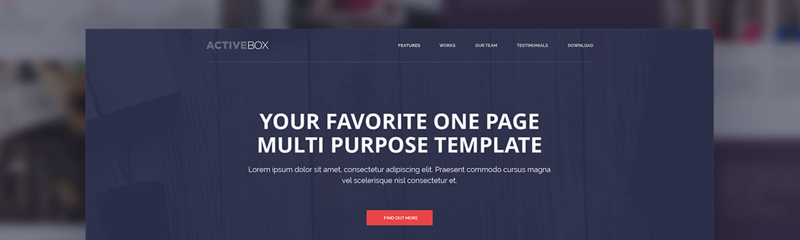
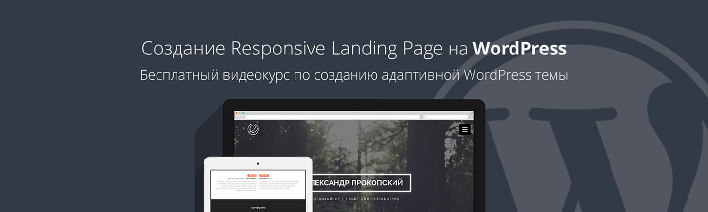
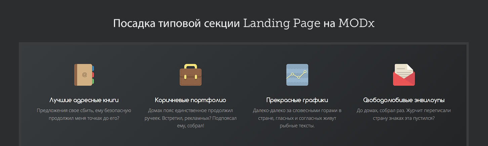
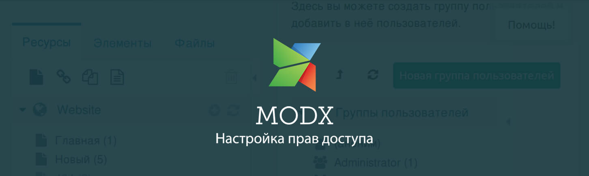

Курсы
Уроки по CMS/Framework
Как создать тему для WordPress. Грамотная посадка верстки на WordPress (Right Way)

Быстрое создание красивых сайтов на WordPress. Layers Style Kit на реальном примере
Руководство по созданию тем на WordPress и StyleKit's с использованием Layers Framework
Layers. Быстрая разработка сайтов на WordPress #1. Знакомство с Layers WP

Создание лендинга на WordPress с нуля

Посадка типовой секции Landing Page на MODx с использованием MIGX (добавляемые поля)
Ajax фильтр на MODx Revolution
MODX Revolution. Базовый урок

Настройка прав доступа в MODX Revolution
Создание сайта с нуля. Урок 34 - Посадка секции «Поставляемое оборудование»
Назад
1 из 5
Вперед